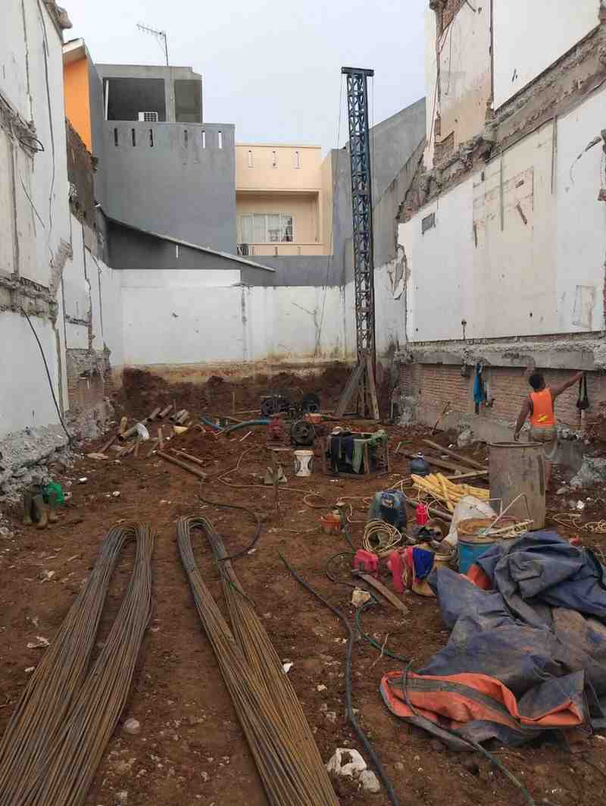

Memahami biaya pondasi sebelum pengerjaan
Pondasi borepile bisa menjadi investasi yang kuat jika dipilih dengan benar. Artikel ini membahas cara memilih komponen dan metode yang memang menghasilkan efisiensi biaya tanpa mengurangi kekuatan struktur.

1. Pilih desain yang tepat
Desain yang tepat membantu mengurangi volume beton dan besi yang tidak perlu. Diskusikan kedalaman dan diameter pondasi dengan engineer untuk memastikan kebutuhan beban sesuai kondisi tanah.
2. Optimalkan penggunaan material
Gunakan beton berkualitas sesuai kelas yang direkomendasikan, bukan berlebihan. Besi tulangan juga harus disesuaikan dengan kapasitas beban; penggunaan spesifikasi inventaris yang terlalu besar bisa menambah biaya tanpa manfaat tambahan.
3. Pilih metode pengerjaan yang efisien
Pekerjaan yang terencana dan rapi mengurangi waktu tunggu alat dan mobilisasi. Pastikan tim borepile menggunakan alat yang sesuai dan operator berpengalaman agar pekerjaan selesai sesuai jadwal.
Ingin diskusi lebih lanjut?
Hubungi kami untuk konsultasi gratis mengenai estimasi biaya pondasi borepile yang sesuai dengan proyek Anda.
Hubungi Kami Sekarang